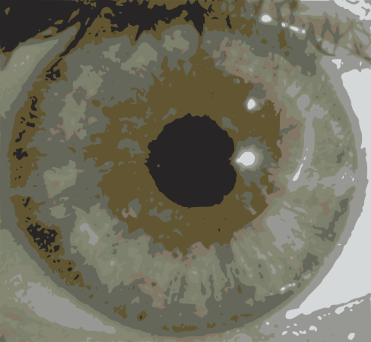
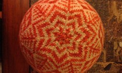
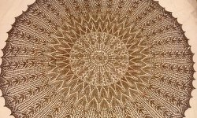
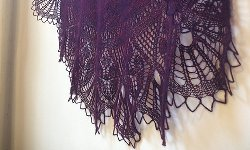

JESSICA MILES
KNITTING MASTER
Featured Work

I knitted this hat using the stranded technique.
The color not being knitted with is
carried along the back of the fabric.
MAD RIVER
link to Mad River Hat

This is a large circular shawl
that I knitted as part of a knit-along
with the pattern designer.
SPIRIT OF GUERNSEY
link to Spirit of Guernsey Shawl

I made this shawl out of an old cashmere
sweater which I unraveled, dyed,
and re-knitted into a lacy pattern.
TIONG BAHRU
link to Tiong Bahru Shawl